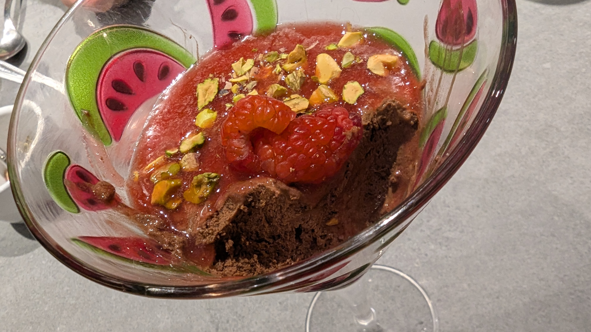

Raspberry Chocolate Mousse

Chocolate mousse with raspberry coulis and pistachios
Decadent chocolate mousse in a martini style glass, topped with smooth raspberry coulis, pistachios, and a couple of half raspberries.
Ingredients
- 100g dark chocolate
- 2 eggs
- 25g caster sugar
- 100ml double cream
- 150g fresh raspberries
- 2 tbsp icing sugar
- chopped nuts for topping (eg pistachios or hazelnuts)
- 1 tbsp cointreau or cherry brandy or chambord or similar
Steps
- Melt chocolate
- Whisk egg whites until stiff
- Whisk yolks and sugar until pale and creamy
- Fold melted chocolate into yolk mixture. Add cointreau (or alternative) if using.
Whip cream until soft peaks form then fold into chocolate mixture
- Gently fold in egg whites 1/3 at a time
- Serve into two glasses and chill for at least 2 hours
- Blend raspberries with icing sugar then strain to remove seeds
- To serve, top mousse with coulis, nuts, and remaining raspberries
Home